Circuit Principle Semiconductor

NOTEBOOK

So many things happened in ancient and modern times. They all smiled lightly.
Circuit Principle Semiconductor
NOTEBOOK
So many things happened in ancient and modern times. They all smiled lightly.
No.Date
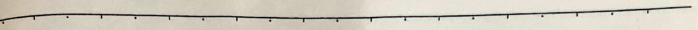
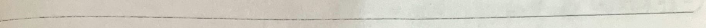
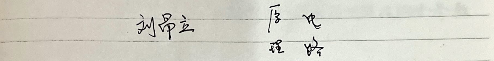
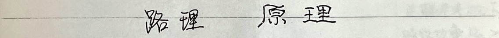
No.Date
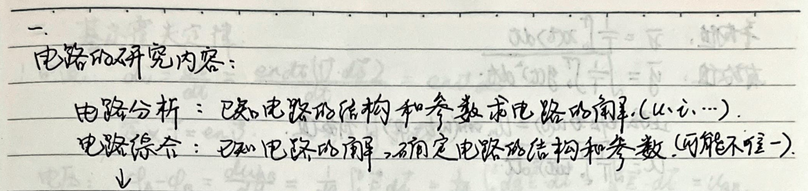
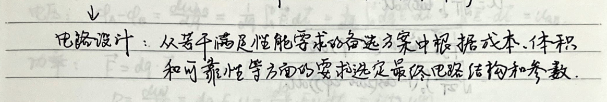

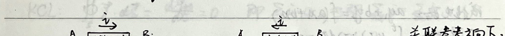
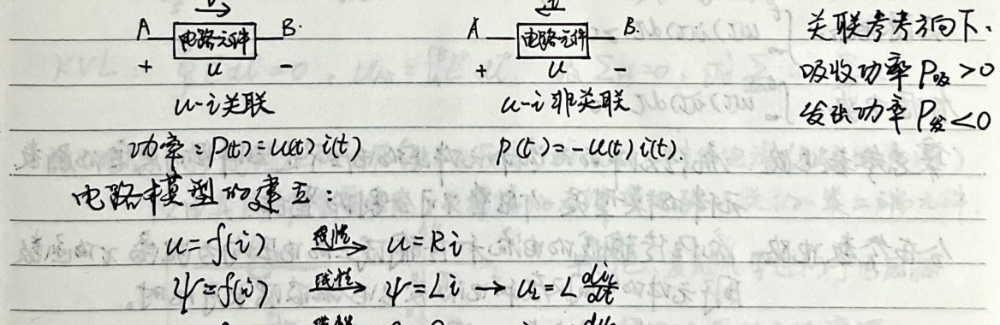
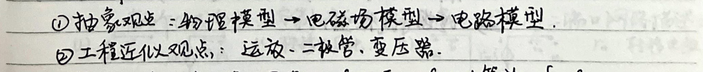
No. No. Date
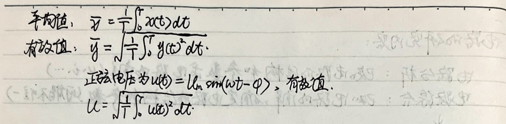
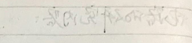
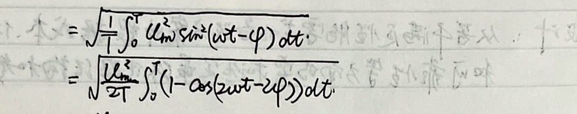
Russian circuit: ay +bys= fax +bxs).
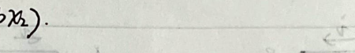
Tianyuan Circuit:
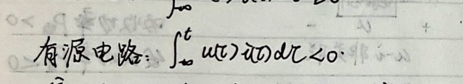
Lumped parameter circuit: The current flowing through the pieless element and the voltage on the component are not a function of the space and degree of the element.
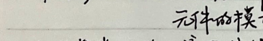
Distributed parameter circuit: The current of the flow bit transmission compensation and the voltage on each input are both distance 2. The pumping function is

Another situation is when considering pool leakage. Example: Transmission component distributed parameter teaching model: four resistors in parallel (Russian question can teach him leakage)
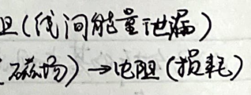
One parallel capacitor (to find the electric field) one inductor (magnetic lift) one other resistance (to find the loss) Ideal wire model,
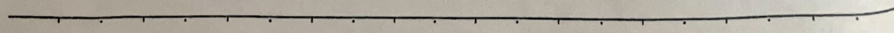
No
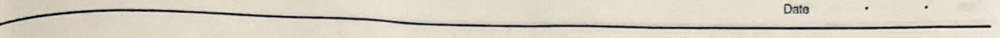


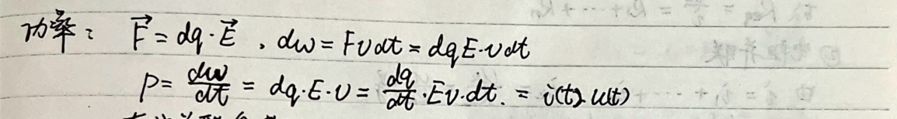
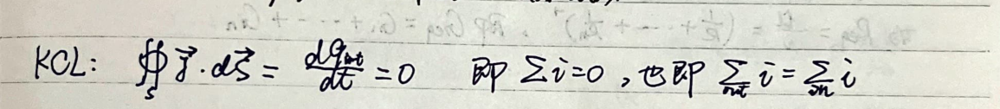
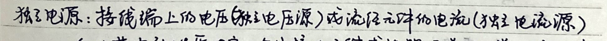
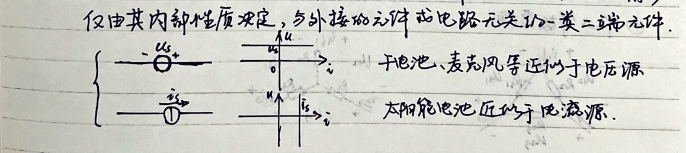
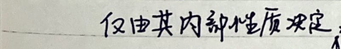
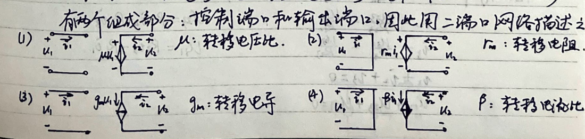

No.
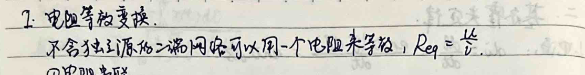
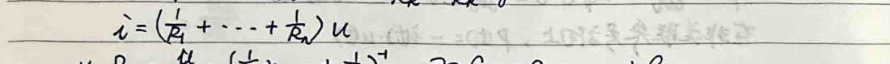
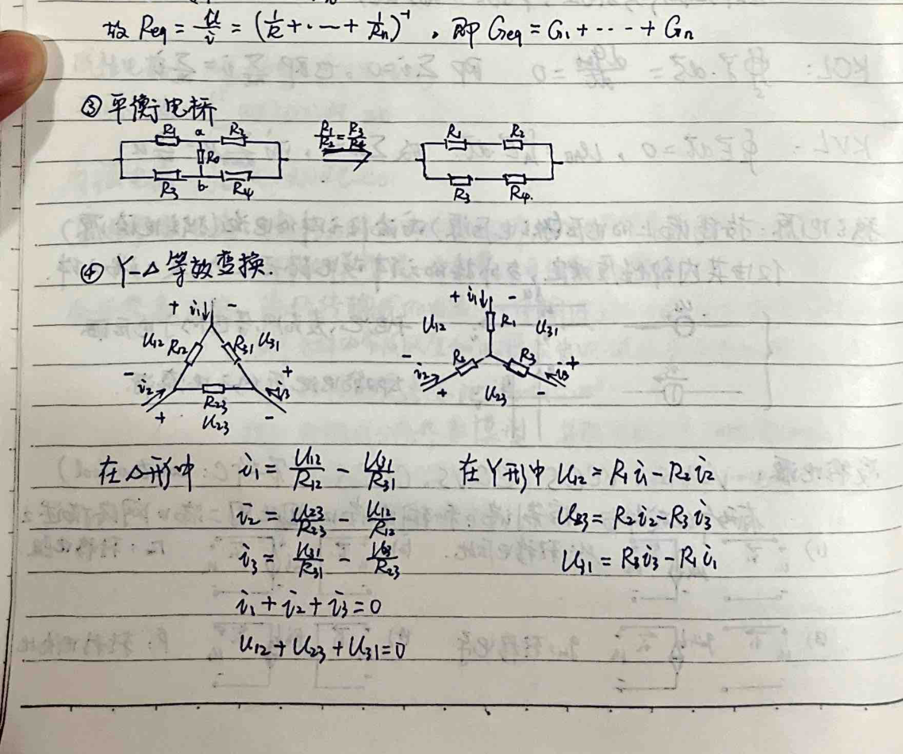
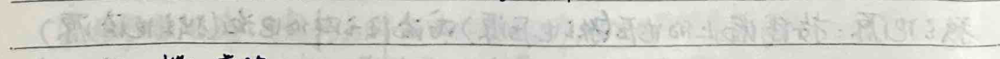

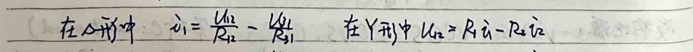
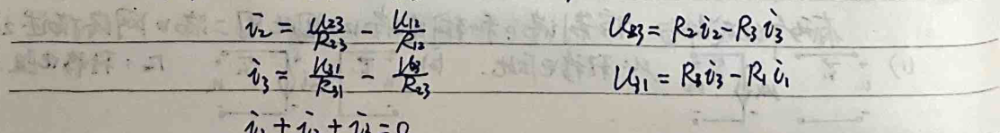

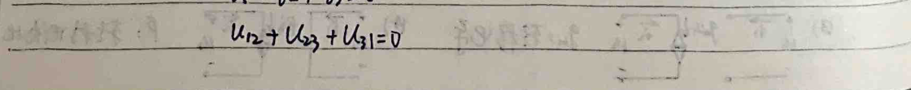
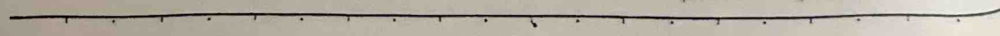
No. Data
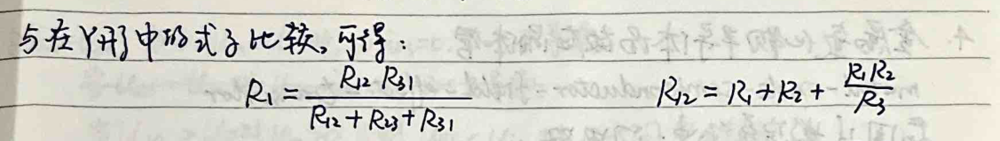
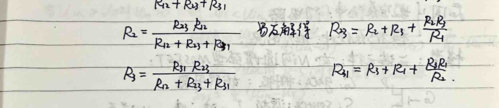
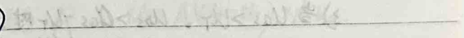
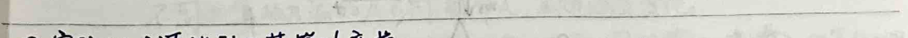
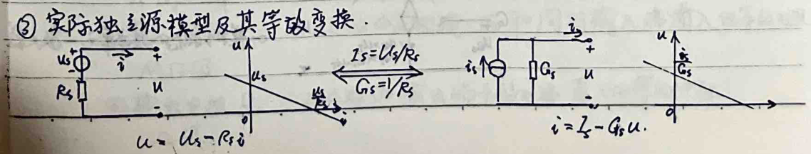
N. D. Data
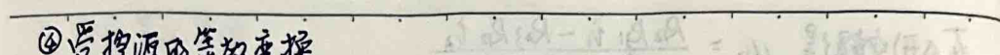
④Subject to source transformation.
If the amount of control by the source in network defense is not in the second network meat being analyzed. Then you can control the source


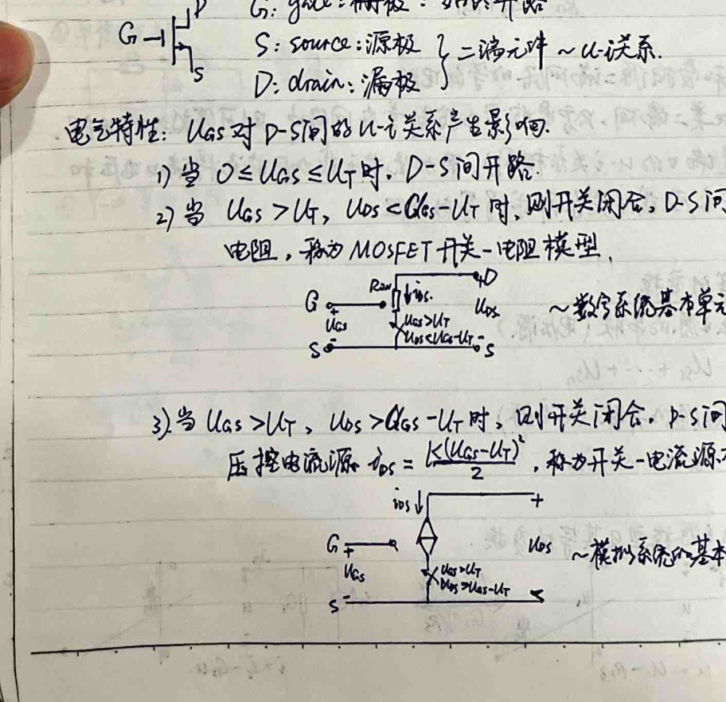
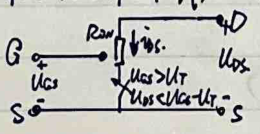
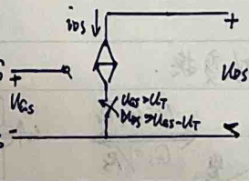
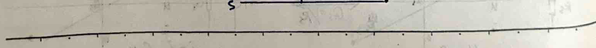
No. Date ™ Wo: Y• (UT when Uss: 2Y UGsEoY Wosk. »Y Let Bas-lin, when o 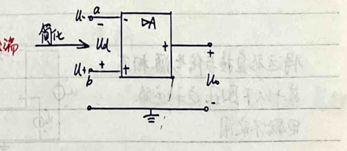 PA output terminal ud b9 W- non-inverting input clear Wo U+ q common terminal. Power supply ground: c 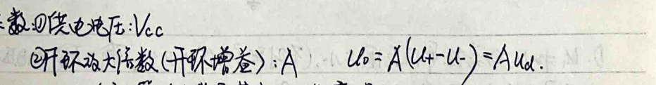 U is the most basic function of the actuator, which is amplification. The A of the amplifier is different for different calculations. This is very important, and the temperature changes. ② Input resistance Ri, from the inverting input terminal and the same phase input, we can see the input conduction effect. MT level. 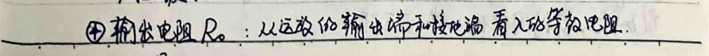 Level 5.

No.Bata

DC into a low frequency field will change the ratio model of the op amp, (M B grain 5, Ri-0.Po-0) 20 DA transformation > A (U-U-) W* Connect the remote amplifier directly to the signal source: u.O For the following reasons, this kind of op amp We package is not practical:
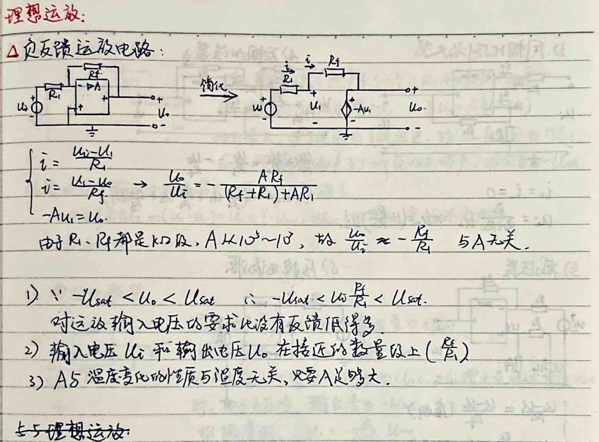
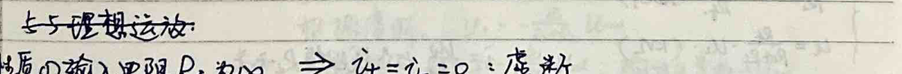

No.Date

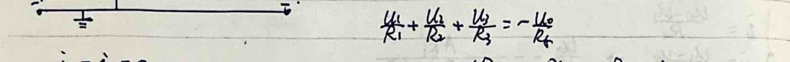
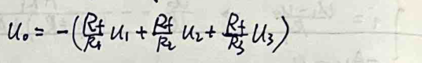
5) Subtractor 6) Voltage-controlled current source port DA· (generator) U=R: 1: (K) Cloud porcelain has nothing to do with the load resistance value R.
7 negative resistance

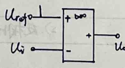
If i with =U
No. Date A is only for the op amp circuit. A small positive noise is suddenly produced at the output end, so the voltage at the U terminal increases slightly, due to Vo AU-L-) -0+ We, and A is very large. beyond the linear region. Therefore L. Directly open it as tlst, and vice versa. Evil output soup produces beans) a negative small coffee sound. Take the meeting as Lt. Property 4: Since the input resistance is infinite, virtual break is still established. ② There is no relationship between ∞ ((U U) = Uo CT-UiatUsc. Virtual short is no longer true. ③A-∞ 7. Hysteretic comparator. The output of the remote amplifier becomes +lit. According to the output, when Uo·1i
Na.

Electrical parameters Mixing parameters. Table): Transmission parameters Resistance parameters (Hu HeV1 lk TiT) 1B Ra/Le Fy 1z 11 Reciprocity system Gra=Ga Hi2: -Hai Ra=Rz GI=Gzi Ha--Hi Symmetrical parts GHr =6n2 Ri= Baz HuHke-HeHby=. Resistor Electrical parameters People and friends refer to Table 2: ~~ Resistor Bazigong number Conductor Grid parameters Transmission parameter ~ Gas number-ran D The y-human transformation of specific impedance from the current point of R parameter accounting for G number: TGas
No. Date 2. Connection of two-port network ① Cascade 12 2-way 1 w wg ② Parallel connection 0+ The ten knowledge of cloud three, note two and ten say

LR=R+ The serial connection of two ports with enterprise connection theory at the common end will not destroy the REMA condition.
No Datg


②If it contains a source of exposure. I wish to find the equation of the sole main source, and then find the American equation of the inference quantity and the A road current.
No. ④ Note whether there is any resistance on the common branch of the two circuits, as long as there is a current source. It can be used when Ding You chooses Dusantian Road, and the Yuanliuyuan You Road is included in a loop to increase the fat voltage on the power supply.
3. Shengjia theorem
Additive treatment. Since both the branch voltage and the branch current can be determined by the characteristics of the node voltage,
Note: When there is a controlled source, the controlled source remains in the circuit, and the controlled switch remains unchanged. The function of the controlled source must be reflected in the original circuit, and does not participate in the superposition. The inactive voltage source is short-circuited.
4. Homogeneity theorem. The homogeneity theorem is based on the difference between the physical response and the excitation (the square sum of the resistance and the resistance): When all independent changes in the circuit are k times, the response will also change k (including the controlled source) 5 Substitution theorem If the current source replaces the branch on the side, it is obvious that any parameter in N will not change, using any bar and UL-ki. u=U.-RoD only has a first-class intersection represented by the volt-ampere relationship at point P. When the branch is on the side, the working status of the branch in N will not change. Note: The relationship between the branch and the closed element of N will not change?
No, Datg
Combined, we get the following expression:


8. Reciprocity theorem


Hao Ming: If there are no branch roads in the circle, then there are 6-2 branch roads in the square sill, and there are no branches above it.

Because the two boxes on the left contain the same resistor circuit. have

second form lake
No. Date ② When proceeding, the relative direction of the current and voltage can be kept unchanged (Zheng and Chengdu are opposite),
D. It is very convenient to combine Dengar's theorem and Zhengyi's theorem and apply it to multiple voltage sources (electrical active sources) and only solve the situation of field current (voltage) in the branch circuit. Circuit diagram pool: time-even principle diagram, evaluation method, branch path: Youzhi diagram: there is a friendly road. Tree: connected, including all nodes of G, without loops. (Of course tree is a subgraph of graph G). Tree branches: branches in G that belong to T; connecting branches: branches in G that do not belong to T. It is easy to know that a graph with several book points needs to add n-1 branches to form a tree. Invest in several nodes. In the picture of 6 grand branches, tree branch: 1 1 Connecting branch: b) ① Association matrix A·Noxb short matrix shows the association between branches and nodes, including branch branch j connected to the node. The branch leaves the node Qijg = Friend road j is publicly connected to the node, which node the branch refers to, 1] ⑦ Gao and Fang Tianguan.
People are also widely associated with the short array Ah e/oxcb, and the star is like an An with the linear element of the sky adding the amount of small lines (sections)..
; A row of (-) xb associated short matrix A can be registered, and the deleted row (node) is the reference node. If there is no branch circuit voltage, there is no two (i...• station, the branch voltage is two (...?),

Node potential = (a., Lan can, M=Ol reference node)
No. Date The loop element contains branch j and the direction is the same ibnl loop. Includes the branch), in the opposite direction. Connecting and reversing the tree branch Uncombined child six B ritual existence will work hard to ask for pain - each killing branch is included in a loop. Property B Each row has at least two unsatisfactory elements - each four-way to bamboo is composed of two branches. Suppose the graph G has 2 nodes, destroys the road, and the tree branch n-! Continuous branches), the tree does not form a loop Rarkel=non-answer row number=bontl. 8-(B..&1 base and coffee drunk mix fast branch tree without branch current》=(,1,), branch voltage = (L...,4), loop current = (,-m)..~KVL ③ Short array form of branch voltage and current relationship • =Ri+RZ-D T=GL+GU-Z
Na.
② Duality principle Mesh Nodal branch Continuous branch b-nti Technique Branch M Open circuit Short circuit Voltage type Current flow Variable Mesh current 5 Node pressure i Continuous branch current Cloth Branch voltage Conductance G Resistor R Element Capacitance C Inductance L Positive drip source system Voltage source U Parallel Series connection Three-shaped A Star AY Kinckheff KVL Nobel Thevenin's Theorem 5 The second state form of Yi, the first-form of reciprocity


Small signal method 4
No. Datg


No Date
①-Yi Da Qi. When Ucs is not a small number, 2 operating points are solved according to the segmentation method of "fake no test". When Uis contains children, AUes is the output and AVs is the input, which is called the amplified signal number AUps dllGs AGs AVPs Ar Atte AUGs.Aos Als = K (Uas-l) 2Kluas-U)-Re. In English and Chinese, R is the equal discharge resistance seen from the PS terminal. When UGS=ratio+Al, it is the synthesis of the above two, which is called the common source amplification outlet. ②Gate circuit According to the requirements, go to the truth table (ntl, line 2'41, n is the variable of this series) and find out all the resistance methods that make the output to be the true input of this series. Connect these resistances and OR operations to synthesize a new unified oversymmetric expression. Simplify the logical expression. Use the basic logic unit to realize the expression: YA Inverter: A-20-Y: olo Y=A.
6. Time-city analysis of dynamic circuits, 1. Dynamic components (energy storage Yuanyang). (make it seem non-time-varying) Shen Gan male guest Dan. Silicon Laitan idtt idlt memory certificate) + udt. "Continuity" related oil w=lfpadt=jEwict w-/pat-bit widz energy storage =cfwt) rdi udu =-Cuit)-=C1k-∞ Actual: Mang IR C U Direct culmination of low frequency) Series L= MLi ±=2m Parallel connection C= ZC Change path Ylr)=Ne)+udt 90)-9(0)+Ttcdt Parasitic inductance when off-frequency... Transmission residual distribution capacity, MGFET electrode (phenomenon) Parasitic capacity (, Cas) High electric area breakdown (rated voltage needs to be marked) Qiangsi Flow Excessive magnetic force can also cause mechanical deformation, and overheating of the coil can cause the flow to be limited (need to indicate the rated current). Constant coefficient linear constant micro-square pull (group).
No. Date 2. Classical method for solving dynamic circuits Free dog area: Qiaoba differential equation. 1 Mandatory response: special solution of non-circular equations • Coincidental excitation o DC excitation Reason: 7200 hours. The response of the above excitation on the branch at any time is the solution of the differential square element. ① First-order power-state circuit) is described by the first-order ordinary system and the ordinary differential and square particles: 2) If there is a dynamic component in the first-order circuit. Xian or Huainan turns it into AC and forms a circuit. 3) Find the homogeneous differential sum of squares (without excitement) and the non-homogeneous fractional square solution (with imperial excitement). Dan's formula B is very exciting. The open formula Ae 4) The golden solution is the ten-time solution of the call, and A is determined through an initial body. (In engineering, it is believed that once the transition process of 3T~57 is completed, the new steady state is reached) Let f ratio) be Find the voltage x current of the branch (response), f0) is the initial value, and ftlm is
Forced response (the steady-state component under DC and sine), where is the time band number, we can substitute o into

Among them {Yu Chu) 16. Forced response.

RCWE=RC, seven out of seven are definite, R is the equivalent resistance of the dynamic left element seen from both ends. ② Second-order state circuit 1) Two external ordinary differential equations; combine two states with different dynamic properties to store energy independently of each other with the same properties (no combination). For example: The following is the theory of second-order constant coefficient properties (non-homogeneous) of constant-order subdivisions.
No"

It can be seen that the steady-state lang is also sinusoidal
NO.Date
NO.Date

t>. Extreme worm s - t) = 8 ratio - t).

So far. The imposition of capacitive state response and zero-input response can lead to omnidirectional users under arbitrary excitations.


NO. Steady-state analysis of dynamic circuits under long sinusoidal excitation. 1- The basis of analysis (sine prime, power) and inverses. Theoretically, solving non-homogeneous differential equations can solve the response problem under sinusoidal excitation. However, through the phasor method, the solution of the component equation is simplified and the response under sinusoidal excitation is simplified. At the same time. The calculation for 2 years is also simplified accordingly. After using the Fourier series, the low steady-state response and power of the dynamic circuit under periodic excitation become easier to obtain. . Sinusoidal excitation: =Imsinwt+qi). For its technique, the autumnal equinox. The results of addition and subtraction are all normal quantities. Therefore, the voltage and current in the nocturnal electric circuit are sinusoidal quantities (obtained through the above calculation), so the analysis of the sinusoidal state is also time-consuming. For the elements of sine, we can ignore the frequency and only consider the mid-value and initial phase. cile) = coskst+e) +j sin (cet+) Fcoslet+4) -pe e lktre) sinct tp) - Ln eiktkp) three Zm Sirduvt+ (=Im Ime utr= Im lwojetw7 -Im［rleifejnt] Today i-lef increases by 1<4i. Therefore i=Im Miiedut7 "In the physical rate of breaking trade, there is a corresponding American system. . The movement of the cloud can be transformed into the movement of the pair of workers. ① There are two representations of i: i=124; and i=7:00p: +j2si4ls. Among them, 220, 4i6 [- is not the same, so it can accurately represent a cup, so that one represents a sine quantity. ②Phasor diagram.
No. Dato


No.Date


X resistance: wLA resistance: once released,


Summary: Gongsangke’s one is represented by the plural number one W = (cngtjusig (2cx:-j78a4.)
No. Date Maximum Power Transfer: The condition for obtaining maximum active power from a given source.
) The hand spiral rule determines the direction of the magnetic field generated by the current and the situation of setting this bond. 2. Introducing the same terminal to determine whether the mutual magnetic flux adds to each other requires the determination of the two circles. Innocent 3) Therefore, if the reference side flows from the end with the same name, it is a circle on the reference side from the end of the hole with the same name to the end with the same name, and the size is the heart vessel, and vice versa.
No. CHO 32 3L.tM Date.

5) Transformer (H-MB) eg.! Rongxin transformer = (Ritjiud) + jwmi. jwkg i 1i = j0ui + leotjwb) ~ secondary side primary side atjo) itjwmi=ratio EiwL: jud Ai ① jwMi + (RatjwLst2) 2=0 Z22=RtjolstZ: total loop impedance
Z2+ LMF ZI WM zi Equivalent circuit of the primary side of the air-core transformer. Equivalent circuit of the secondary side of the air-core transformer. The circuit must be rewritten.

No.Date

U=JwL is positive, itjwl.i eg3 Ideal transformer (L, L2M 8, layer=n, on full generalization) ui=ni ~ L=-6 32 reciprocity. ~D Ideal transformer has an equivalent resistance of 2: =n will) n. It can be seen that the ideal transformer can be regarded as a voltage controlled by a voltage source. Controlled quantity, controlled storage,
No. Bag
DC component (value) fundamental wave (o noon) secondary wave elimination (R 2), effect. ② There is a change in value and calculation of the power of the object (w01 = sacrifice) No sergeant sign Losalketr0e) Main)! 22kamsa kuntHedt=yuan), 2ben silkcst-e.) ZintlEetyl
= 2+ articles UJncestlk. Uo2 Li Zhiliu's success story and Uincasf action both failed
No. Date.
Note: Parasitics in MOsFET are also susceptible to the influence of transient response and steady-state response. IR [A U. G Steady-state response (small signal excitation) constant soup area. Philosophical response (short-shaped micro-excitation is short five 2 input to w D Al. G Alosz GD Casi Casi +Cas tew Casl Assume the excitation is Ali=Alas, and the Ato response is AVo=Alosa RL Early: us 1:0 Ou CGs= ① Then the voltage gain is u KoN] Gasz -A8.R Cass discharge and other discharges will AlGs Alcsn (Uor@) 20 pieces =-9mAHsso Ru=9AlloxsR 2. Uol (0o)=16 1Uoloo) 0. :) T=Bles Ces AWas T-RCosz Alasr Rtlow 2RoMCas2 Let L t) = Uo, the solution is B+ joCas 0 ter position = RL 1-AZ0:, E (luk-t/4-Mp). ) + jw CassA_ has t leg = Tlaustall), ...HSmRa 一.Aio, when input U is not 1, w A AVox, HjwCaszRi TR H ju CoseR [Rowb=Casz 9AA' •H: (eCask)

No, Dato


No. Dato


No. Datn

No.Date
No. Date Reference for the connection. It can be converted to Ya connection. When the power bed is connected to Ya, the negative pump can be switched from single-phase


icp2plcoup-Qnput-4+240))]
No.Date


No. Datg Basics of semi-chip body devices. -. Semi-chip body diodes and bipolar transistors 1. Semiconductors: Si, Ge, Gaks.. The semi-hexylic body s0 in this certificate is completely pure, and the supply structure does not require the addition of half bodies. Priceless bonds. OT-ok, no external influence), the valence electrons are transferred into the key valence keys ② When the temperature rises, the valence electrons are divided into free electrons The number of vacancies in the bond is excited, and the self-electrons are constantly breaking away and filling up, so that the electrons appear to form holes. ④ Corresponding to the direction of the electron side: na = i (the electron concentration in the conductor is twice the density). ⑤ When the temperature rises, the intrinsic excitation is enhanced, or the flow rate increases. As the intensity increases. It will reach a dynamic equilibrium when its hole pair is generated: Ni=B=A. e dance Impurity year conductor: P type N type Incorporate trivalent elements Squeeze in pentavalent elements P, As, Sb. B, Al, In The impurities are almost completely ionized when cooked under wet conditions. At room temperature, the majority of particles are almost completely ionized. Majority: vacancy. Majority: free electrons. Minority: hole. Minority: co-electron. Po:NA+No&NA. No-No+D.~Np


No. Dato PE minor carrier (electronic) drifting pole motion in N - the Datu motion caused by the difference in limits and
Domestic Jianfeng Yangnan production report's sense of education must reach a dynamic balance, and the space has been settled before it can be accommodated.
Inside is e substance E. ⑧1④ ① ④ Space charge area: P area N& low positive area low resistance area high positive area
barrier layer


Two 2 forms a closed loop, causing a reverse current. The number of minority carriers is small, and the reverse current is small.
When the reverse voltage is isolated, it is close to cut-off. When the temperature increases, the concentration increases, the reverse current increases, and the reverse saturation current increases.
①. Zener breakdown (<6V) (high impurity concentration, low space capacity). The reverse bias voltage is very large - the 2-valent electrons are ionized, and the covalent bonds are destroyed -> space has been generated. A large number of electron-hole pairs - the reverse current increases sharply and causes breakdown. The electrons/bivalent electrons are more likely to break free. Snow stage breakdown (>6V) (the impurity concentration of the bridge is low, and the space is wide). The reverse bias voltage is larger, the kinetic energy of the small electron is increased, and the neutral atom is collided more frequently. A 7-valent electron is collided and a new minority carrier is generated.. Collision e-commerce, temperature force, a lattice thermal vibration, and a pair of carriers are added to enhance the current. The above two subjects are currently optional. Super breakdown will report that after forging PN, it cannot be sent. The electric strip effect of A PA sulfur. The middle time zone outside the Bisheng area has a balance of protection and I have a good card.
No. Datg
Data Co mainly depends on the forward current passing through the PN store, so the G5 forward direction is also at the end of the reference relationship. When working in the reverse direction, the Co name is not included.
{When positive and fine, G>G: GXlo When reverse biased, G-0, GZC. 4. Semiconductor diode PN evaluation + shell + electrode lead-semiconductor diode. (PB positive electrode: N area negative electrode). Point-connection type: small live capacitance. The rated current and k-direction pressure are small, and the power frequency is high. It is suitable for high-frequency operation. The two-output type: while the power is large, the gray current is large, and the electric current is large. The second frequency is low and used for rectification!
When there are too many holes in the electric area, the recombination of holes in the potential barrier and the positive intrusion should be large.
Body resistance and leakage current in clean area ⋯ m: emission coefficient E0.2)
A main safety parameter: Maximum forward average current (current flowing through the large wall): 45
The highest working specific voltage: Ve and the return current before breakdown: ZR. The smaller it is, the better the unidirectionality is.
Maximum power frequency: f, junction capacitance exceeding f cannot be considered. Static voltage: Rp=
Dynamic anode: YA= A diode constant type change ①. Minimize model 4/p. 20 (69
No. Dato


No.
No.Date
Na Date


A very small leakage also flows through, and they are close to the disconnected switch. 4) Reverse working state: launch plus reverse pressure. The current collector adds a directional bias voltage. When the phase is multi-phase, the pole and the pole are interchangeable. Due to the different degrees of clutter between the two bridges, the conduction effect may be different. Ebers-Melk's analysis. 》Ignoring the body resistance and electromagnetic resistance of the product area, it is believed that the addition of internal and external b will result in low emission and high energy:
2) Small electron sparse injection does not consider the recombination of the potential in the entire region. 3) The base window modulation soft response is not considered, that is, the effective width of the base region does not change with the pressure. 4) Reverse breakdown is not considered.


In the Gmittr and Celcckim districts, the distribution of minority residents and residents is as follows:
Pec-Peo=［RC-Wa）-Peod.e
Pe80-Poo= LPoluk)-P1.et The distribution of Ysc in BesZ can be determined by the solution and edge, Lac)-Mo= -
No.Date
Xisi streaming transmission equivalent circuit.
Call 250=(- dede) 25s the reverse of the emission method when Jibaji is open (20=0)!

④ ×の. Call -20-(-akQp)2s the reverse saturation current of the dye electrode with the emitter open circuit (Z=0). 0F4s. c E Lde -) faLade -) 3) Heyuan Xing conduction circuit. Le= 02es (eRequired-)-Lea eLeave 1)=251e4 1)-20g1e currency-). Let 1∞=2s lele-1).2ee 2s(ew-1) F, 207= Icc- ZEE Positive=Taiwan 1 per 1-2 he e first) Er発-20E.-Sign-20e+20-28•発2. 2 2: 2 (e every) a few (e every 1) = 20-like: 20-200+ 20s-a few two-a few industry The small and medium-sized classes include three six classes and three Qiao numbers 2, B: Pe. Is the most common kernel type. ayls E This is based on the Ebers-Matl model. Leixin analyzes the four operating modes of the body tube. 1 amplification state (JE fifth edition: V6E20; J reverse edition: Vc<0). (20s20, e currency -1 less -1): 1V6ol》1 OFLE+-deap) Les Fe. Lc2 20-28-2e ~ (-0p) 200 (e 1st)

No. Date ② Follow the characteristic curve of the body tube. Output eg•Ck: lie Ue Vke 201 1) Input the characteristic curve, proof = D (2G) wesconct TJoV Wasl:: 28= Lp+ Lip-2080 When is certain, ls increases: Zep decreases (electron-yibao composite decrease) decreases upward • i-VoE=0 corresponds to the leftmost position of the song,
(Mai Rong of the base area. Unbalanced B-type decline, compound peace meeting)
When UeE<0, the base reverse cell sum current is very small. WVndl you must arrive at any time, the emission concentration of four is very high. Wear it together * 21 output characteristic curve 10=f (hE) loss:cmy 168=0 saturated UBkycEs
No.Date


No.Date

No.Date
A will prove that the frequency is N, and due to the existence of junction capacitance, the frequency of the work is larger than enough. 205 26 questions are congenial. When 1 drops to 1, that is the special frequency f. 3) Limit parameter A is the maximum allowable collector current Jeu. When the proof is too small, the recombination effect of the carriers in the emission space makes the base current increase, thus decreasing; when the value is too large, the emission area enters the base area. (8): The value is too large. Batch compared to base and (hole) concentration. In order to keep the base positive, it is busy. The external circuit has to fill up a large number of holes to the base, and its common direction expands positively, causing the area to drop. When Ve V/E drops to a high value, the corresponding collector current is Lam. ^ The reverse breakdown voltage of the emitter junction when the emitter is open: VR) e80 Ve A The reverse breakdown voltage of the emitter junction when the emitter is open YeesBBo. VEE
No. Dato


No.Date
Vom=Re:Lem- 5 As long as n e is large enough, the output amplitude Vom can be larger than the input signal amplitude 16 2. Hybrid tube switch electric spot. Re 1. ~lo. (Add to the set) +0 Ve V. U.> With time, make a draw, stand and remember the chicken big (note the dialogue) Both sides are going in the wrong direction. U. Uot= 1ecsed) saturation voltage drop Vceuss).U. ~o. A new method for judging the working status of the General Logistics Department: UsVo Saturation/amplification: when the crystal reaches the critical state VeB =O.
No.Date

Clleetr Regio:

0rDediAPe

The prooren solution in th base guas-nectrad regien. AMeBO=Ale bag+Aze device A1p(o)=noo(e 1)=A.+A And Ane(M=nade several I)=Are device A.e shiry4g) sA(w/Le): LE>-gsD Sh(W/L La--gSle (e sauce-1)-
No. Date AMBt) ~Analo) + [An. (w-Anale) the department.. (：>w) DE WN I+ )+ DBLE Ns matst oy TA minanity Canrters

DB) z: ME 器光 fle 2 malee it acrts the base. DE WNs Ved=Vo:+h) Mede Eoither Boss Collector- Boae le 18 VBE. =le/d =2:8 Reverse ~0 more Forwond 2o Actile Controllel Coitrowlad Forwarl A Clip emitter input characteristics: (VG=corut) 1as 1-1 = gs 4Peoo No. -1) +.95 old Ble every -1) Ls= 1a- la =M 1 Common emitter input characteristics: (Uhs=Cnut) Common emitter output characteristics: Lis=cont) A Estimate the above two equations (go to ) e sauce = L9s No. Po+ 9sZR/eW (28+95 Peot 9s Wuji) 1e-951210m 5A0N/) (2195 bags of P.t95 old l -9s (Bing Bo+ 4 Npoth (w/Le)) (4195 Sauce B.+954Bee-1)
No. Date 6. Field Effect Transistor. Field Effect Transistor. Netl Cade Sentcondudor Field Reflect Trasistor. GIGFET. (1 original AAL) When Vos=0, D and SB are surrounded by respective depletion layers (space electrons). KB substrate polysilicon has no conductive path. At 16s20, an S source electrode is produced in the S:Oz imaging layer from G electrode to B. N-flash enhanced MOS creates a very frictional depletion layer. Vos2V6s1D, the electronic control of the expensive surface layer has been corrected
At this time, if V is x20 (forward voltage), the drain current from D to D is generated, and the sink is turned on. When 1:>VGs), a flash is formed, which means V=O (VS=VGP). The electric field in S; Qa is insulated, and the conductive flash is short. When V0s20, a polar current 2 will be generated, and a transverse electric field from mouth to s will be generated. The potential gradually increases from S to 》. At this time, the field is no longer uniform, and the channel thickness changes from thick to thin from S to D.
No. Dato
When Vhos>Vas- Listar), that is, when VaD< Vastay, the buyout point extends in the direction of 5, forming


To improve accuracy. Consider the channel length modulation effect: 16s, pinch off -S, L, the groove is suitable for the current, and the voltage between the turn-off point and the source area remains at Vs-Vasth), so there is less death. For example, the west line of a field is tilted in the saturation zone. The slope corresponding to the appropriate length of 1 s is lower, and the intersection is (30~50v). The shorter the L in the Early electric zone. The smaller. DPU: V+ VDS 108 A breakdown area. When Vos reaches a certain value, wear it. .To wear also increases with the increase. Weekly overtime for Vast, the same Ux head-off field strength dropped. In addition, WPN supply will be broken down, DSS will be broken down, and GSS will be broken down. ②The polarity characteristics are excellent. JoV S ~Vs Vasca). ⑦ This is the result of the channel length modulation response. ~2Kp (the channel length hole control response is limited).
No.Date

No. Data explains the state model of OMOSFET. Line capacitor (plate capacitor):
Can, Cas, Caf (C: Channel) S.? Non-donor capacitor (influenced by ethical pressure):
② Source (S) drain LD) can be used interchangeably: B MMOSHkp = JhnCox 2 4/4 Cor = akp of PMos. ④ Because there are many conductors in MOSFET. Temperature has little effect on it, so
MOSFET has good temperature stability. Temperature affects two aspects: T, W (exhaustion width),

Transfer characteristics Output characteristics Ves=ouy GP-> Vos=5V S Vs=-Vbriet) N-channel suitable JFET. Ths. Vaslef). C) Cut-off area: V6s < V6s out) Ws 2) Variable resistance area: 0>Vs>Vistcdf), OL Uas
No. Dato


Vos≥l6s-Vsetf), from pre-pinching to pinching, the break point drives the source
When the power is turned on, it will drop slightly, and after 20 hours, it will rise.

JFET model:


No. Date.

Drain signal current i=gmti=9m Um Sut total drain current
in= 1pa+gm Usn sat- Vo= Voo-Roi= (plus-RP2pa)-gMRp V/smsiut.= Vesa+Vo
Including field effect transistor switching circuit If the input signal is a large amplitude pulse signal, the low level (VL

Electronic circuit experiments.


No. Data


Pl custom reverse characteristics: "The direction of the difference between the applied voltage and the potential is soft, 1 less, less, W.MI:
1:9 Dmte
(w~)
No. Dato 2: Bipolar separator tube.
1. Use NPN management to defeat. The emitter is already NB, the search level is high, and the base is already pE.
When the collector mentions the N area, the wave width is very low; the width of baseB is very small. (The system limit is high, the potential of this example is small, and the hot hand scale is small and the risk is low) Assume that B and E add forward bias, and CB adds reverse bias: N Lcn Tgo Pe.- Lcgo Ws NEO Wc

i1Bp -ZEn-2cw is very small (the combined current of Tianzi and Rongxue in the base area is small) (V platform mud is small, Luxiao is small)


: Common emitter DC amplification factor. Typical value is several tens to the heart.
Meaning B= Le e+（g+1lcc0= B4a+2080 2 F28. When sharing the same electrode, 1e-68+1248 + lcto=（B+1 Xlet Leeo） 2. Find the transistor characteristics. Take the common emitter grid method as follows:
No.Date

When Vc increases, (Vss does not support) 448/ Iyoy: The space current of Je EWI. 182, L2. (Basic positive width hole system response) VA (Eardy voltage) represents the influence of base five richness modulation Meel/a: W after D·UN. The effect is small Va -V V If it is too small, there will be fewer compound causes. When leA Vg=0 ie is too large, there will be fewer holes to fill up the base. OK, the gold loss Kcelbi-amc -i2leso -VE Meycso with the certificate as the parameter (can be seen from the input holding field line)

As mentioned before, when i increases to a certain extent, the star will drop. When the signal reaches the yellow high position, the corresponding lithium collector flow is Lg - ic Veaoeso: When the emitter is open circuit, the collector is expected to break down and the pressure is reversed. Usually tens of volts. Veieso: The collector is open and the reverse breakdown of the emitter system is also voltage, usually several volts. When the base is open, Cis=0) The reverse breakdown between the bead and the emitter is also voltage. Vis) C6o: T1.1e:280/, Veexco step.Venseto) VER2B0> VRyCEO> ViyEbo The discharge of the collector is as large as the allowable dissipation power Pem! Laml rPe=Usle Age Excessive Consumption Work Area>Vos VORX:6o
No. Date 3. Tuo image grid field effect transistor. Pirg channel N channel increased culvert type! Depletion speed Enhanced type Depletion type With B Balu symbol KOB 1B G G～ LS S Stop pressure Can night Vas>Vasiof） Ves> Lost> Vas < Vasta）
No. Data 4. Junction field effect transistor. Pi-pass JFET N-channel JFET Name Circuit specification ls 0< Uis< Vesbft） 0> Vos> Veskff） Subdued pressure W-Vasetp Loss Lpss -7Vas Vos Mee) /ese 'Vs=o Vas= 一Vsso -Vas20

No.


IRIG: Corner Departure. Date
No. Date 4. Measure the voltage. The base and scanning lines are displayed on the screen; use the cursor to overlap them, and the bottom of the screen will be displayed. 5. Measure AC voltage peak-to-peak value
6. Phase measurement. Use the west vertical station to mark the cold luck of two numbers. Blasphemy "t." Phase difference is second class. 2.. 7. Time measurement 8. Frequency measurement. Weekly eT performance (6); What to do if the original screen is not available and used as the pumping source CAycr) channel

③Output account number hole section (APML): Fan Guo 2003
② DC bar adjustment. (OFFSET): -5~+5V (500R load), OFFP test off.
10 Output amplitude table subtraction (ATT): 20018, 40d and, Q0+4) 0B, 0d13 millimeter subtraction. ②2 Select quilt shape: ~, ~, .
No.Date